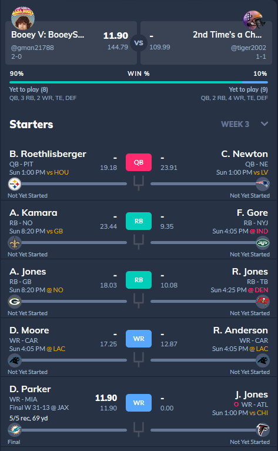
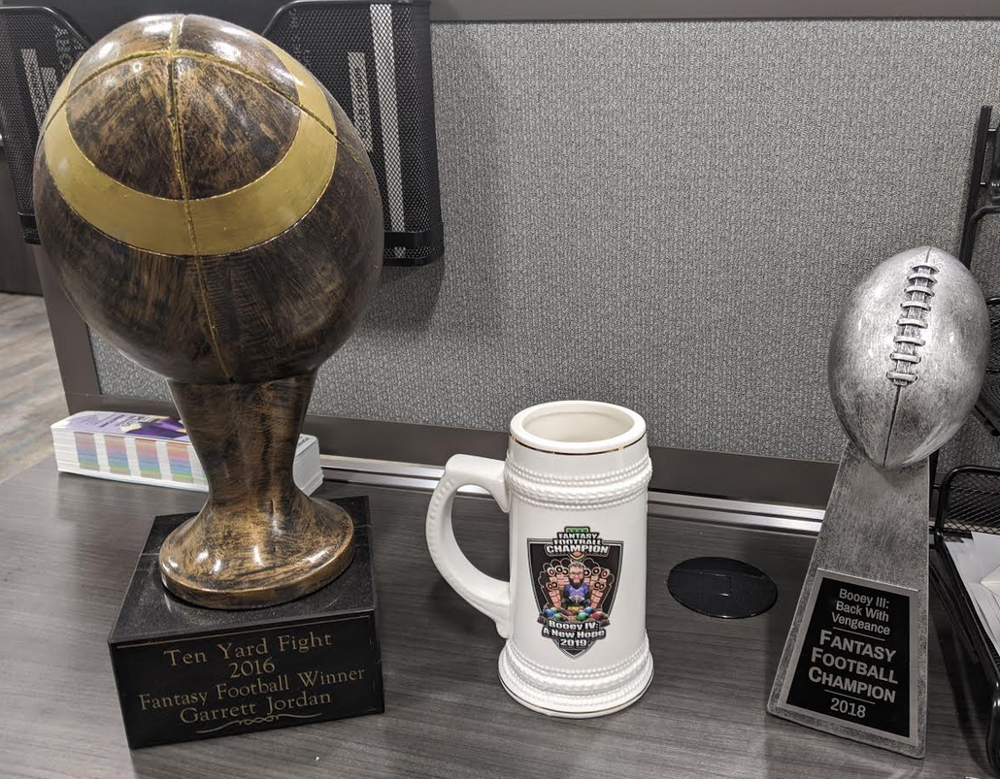

One of the hallmarks of any good fantasy football season is the draft. The draft is like Christmas for fantasy players, and it's where the foundation for your championship season is built.
Listening to podcasts, visiting forums, and running mock drafts are all different ways that managers prepare for the actual thing. The amount of work you want to put in is up to you,
but the better prepared managers usually come out on top.
Regular Season

One of my weekly matchups vs Tiger2002
You may have had a great draft, but your work isn't complete! Keeping abreast of all the news for every team in the NFL is a monumental task, but your job now is to manage your team better
than anyone else, and to stay prepared for each week's matchup. This season, that's more important than ever! Here are some things to keep in mind each week:
Injuries happen, and those players need to be replaced somehow.
COVID is always a threat, do you have enough depth to shrug off injuries and COVID?
Some players don't make the cut on their actual team... make sure your players are playing!
What real life team are your players playing against? What impact will that have on them?
Every league is different in some ways, but most put your team up against another team each week. It's your job to make the best decisions and ultimately score more points than our opponent!
Playoffs & Championship

A collection of hard won trophies
Once you've proved to your fellow league mates that you're one of the best managers in the league, it's time to take home that championship!
Winning the championship sometimes comes with a trophy, but it always come with the trash talk. After all, what's better than making your league mates suffer a never ending torrent
of trash talk? They can't say anything... you've earned the right to do it!